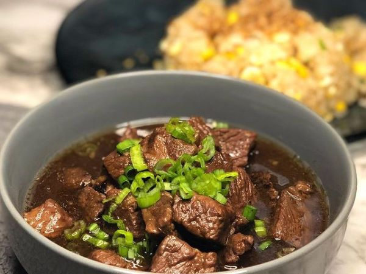

Home
About
Categories
Contact
Beef Pares

Ingredients
2 ½ lbs. beef cubed
1 piece Knorr Beef Cube
2 pieces star anise
¼ cup brown sugar
½ cup scallions chopped
2 thumbs ginger minced
6 tablespoons soy sauce
1 piece onion chopped
5 cloves garlic crushed
2 ½ cups water
3 tablespoons cooking oil
Salt and ground black pepper to taste
Procedures
Heat oil in a cooking pot or pressure cooker. Saute onion, garlic, and ginger.
Add the beef once onion softens. Cook until light brown.
Pour soy sauce and water. Stir
Add Knorr Beef Cube and star anise. Cover the pressure cooker and pressure cook for 15 minutes.
Add brown sugar and season with salt and ground black pepper. Cook for 8 to 10 minutes more or until the sauce reduces a bit.
Top with chopped scallions and serve with sinangag and beef stock. Share and enjoy.
About Us
Kyle Angelo Beltran